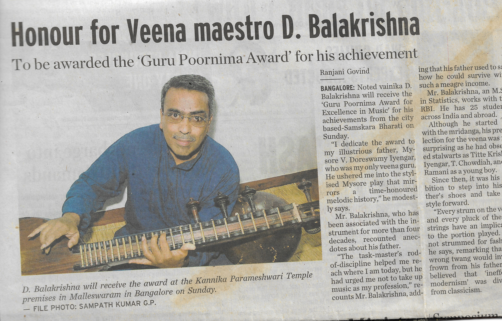
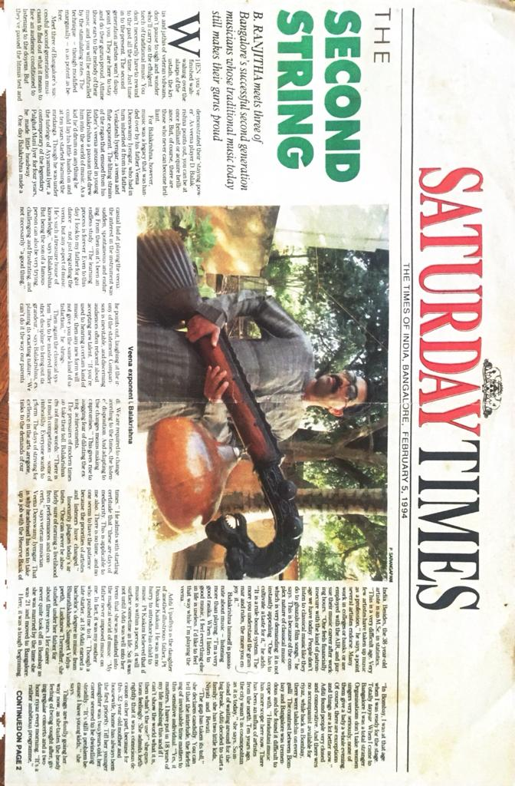
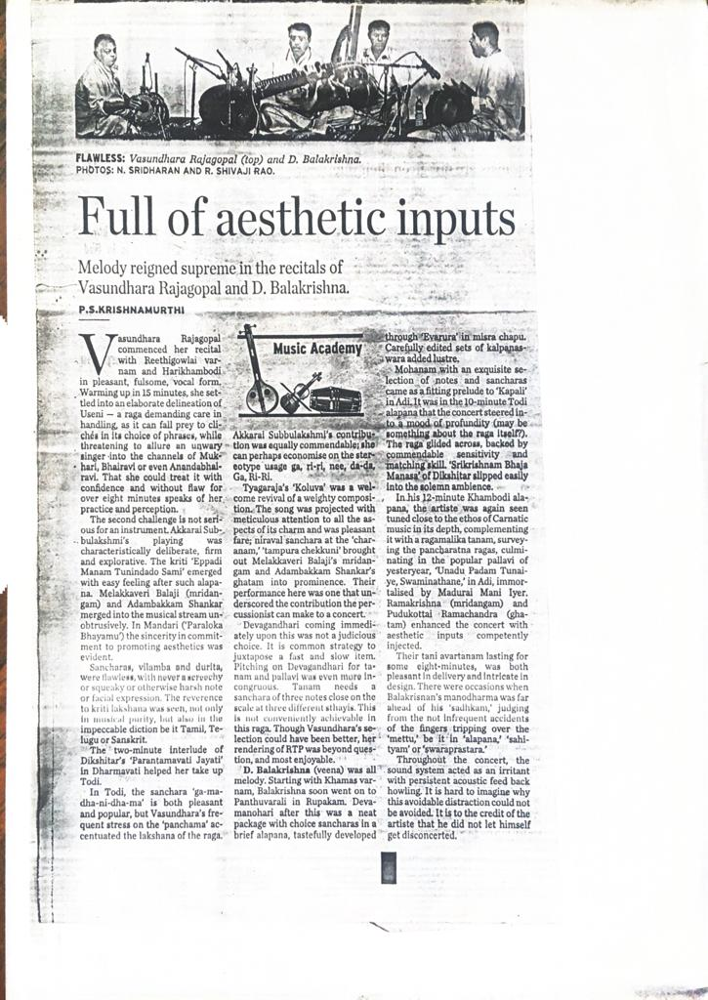
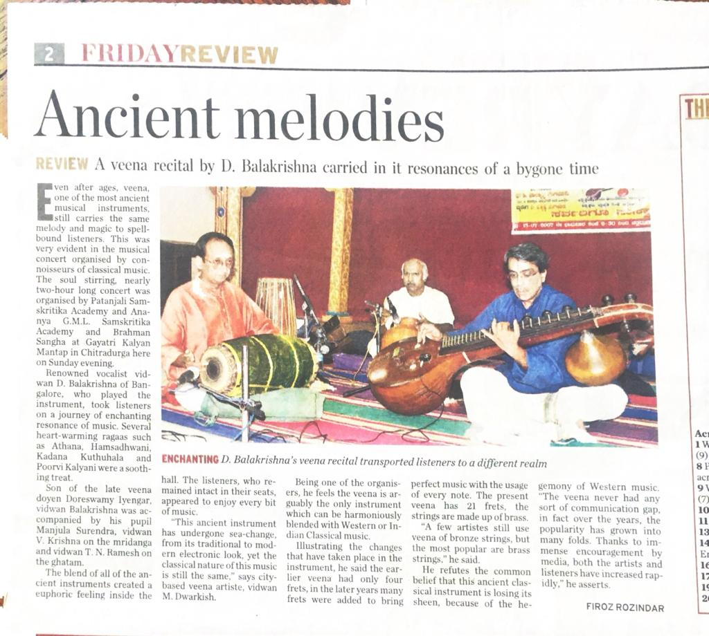
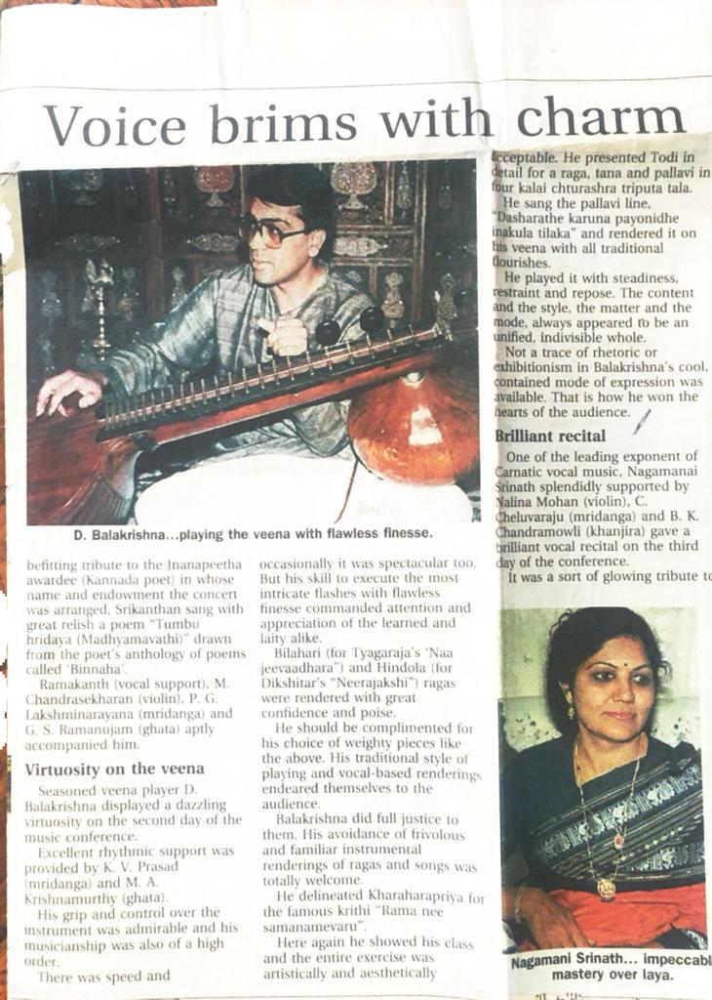
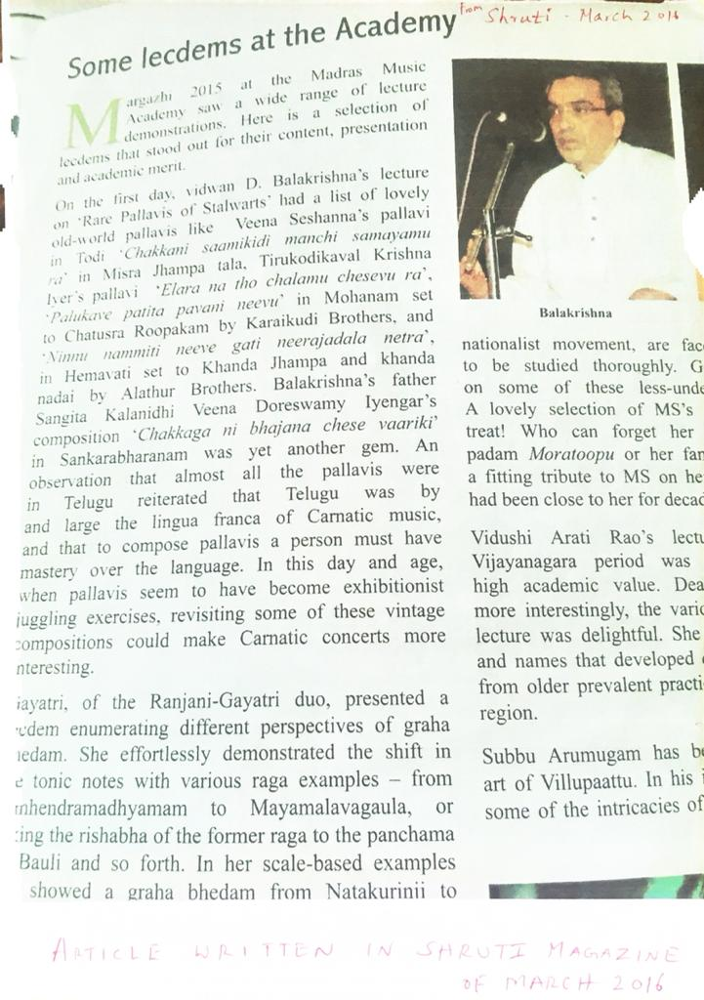
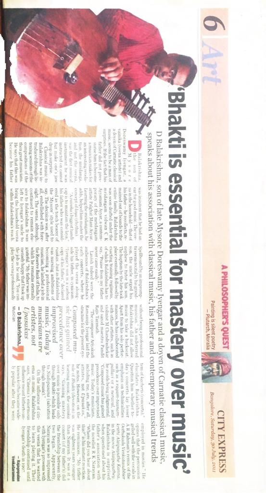
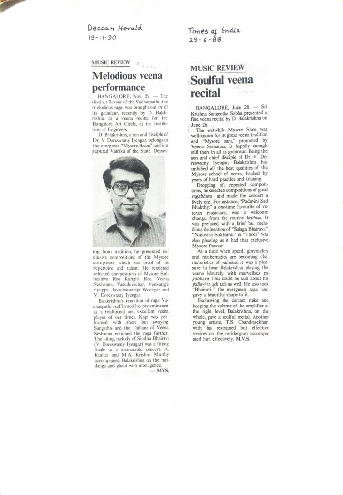
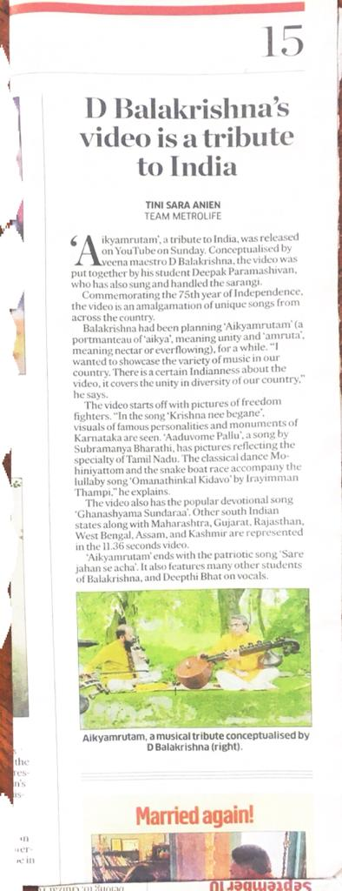

Press & Recognition
Critical acclaim and media coverage through the years
❮
❯

"Chaste veena recital" — The Hindu reviews Swarna Samaroh festival father-son duo performance

"Solemn, profound, plenty" — Music Academy conference performance praised for depth and mastery

"Kannadigas in conversation" — Jugalbandhi with Pt. Rajeev Taranath receives critical acclaim

"Ancient melodies" — Friday Review highlights veena recital carrying resonances of bygone times

"Voice brims with charm" — Tribute to Inanapeetha awardee featuring traditional instrumental communication

"Melodious veena performance" and "Soulful veena recital" — Dual reviews from 1990 and 1988

"Enthralling veena and flute duet" — Star of Mysore reviews performance with nephew Vamshidhar

"Some lecdems at the Academy" — Shruti Magazine features lecture-demonstration on rare pallavis

"Full of aesthetic inputs" — Review of recital with Vasundhara Rajagopal showcasing Mysore tradition

"Honour for Veena maestro" — Guru Poornima Award recognition from Samskara Bharati

"36 chosen for Kalashree awards" — Karnataka Kalashree honor announced by State Academy

"Contemplative notes" — Review of Karthik Music Festival featuring R.K. Padmanabha duet

"Vidwan D Balakrishna, Veena Maestro" — Profile highlighting lineage and proud musical moments

"The second string" — Saturday Times feature on Bangalore's successful second-generation musicians

"D Balakrishna's video is a tribute to India" — Aikyamrutam Independence anniversary project

"Bhakti is essential for mastery over music" — City Express interview on tradition and devotion

Festival of India certificate — Germany 1991, Pancha Veena programme recognition

"Poetic tribute" — Concert honoring PuTiNa with compositions and Kannada poetry readings

"Talent Search" — Evening Herald 1984 profile of emerging young veena artist
